1004B18 POWER UNIT with manual gearbox, with front suspension subframe - R.R.
- Path
- Procedures > 10 ENGINE > 1004 ENGINE AND POWER UNIT > 1004B POWER UNIT ASSEMBLY > 1004B18 POWER UNIT with manual gearbox, with front suspension subframe - R.R.
- Kind
- repair procedure (removal / refitting; the operation number is the code)
- Applies to
- engines: 2.4 JTD 20V; all production periods
- Interactive page
- https://sloeber94.github.io/elrnDB-lThss/en/#/851158
Applies to: engines: 2.4 JTD 20V; all production periods
 Removing
Removing
 Refitting
RefittingSee in Op. 1016A10 SOUND-PROOFING COVER - R.R.
See in Op. 7040D50 ENGINE COMPARTMENT UPPER SOUND INSULATION SHIELD - R.R.
1. Ensure the wheels are perfectly straight and the ignition key is out, then undo bolt (1a) securing steering column (1b) to the power steering box pinion.
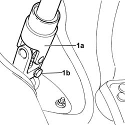
Applies to: engines: 2.4 JTD 20V; all production periods
- Position the vehicle on a lift.
- Open the boot, remove the cover on the left side and disconnect the battery negative lead.
See in Op. 4450B04 Right FRONT WHEEL (one) - R.R.
See in Op. 4450B02 Left FRONT WHEEL (one) - R.R.
- Raise the car on a stand.
See in Op. 7055B54 PROTECTION/GUARD under engine - R.R.
See in Op. 7055B64 Engine compartment DUST SEAL in front wheel arch (one), left or right - R.R.
- Right and left side
See in Op. 7055B42 FRONT WHEEL ARCH LINER (one), left or right - R.R.
- Right and left side
- Position a tank to collect the coolant
1. Disconnect the lower radiator pipe.
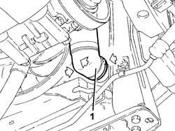
Applies to: engines: 2.4 JTD 20V; all production periods
- Lower the vehicle.
See in Op. 1088B10 Engine coolant SUPPLY RESERVOIR - R.R.
See in Op. 1008C10 Power unit REACTION ROD - Replace
See in Op. 1048B44 RIGID air supply PIPE from heat exchanger to intake manifold - R.R.
See in Op. 1048A56 UPPER RESONATOR - R.R.
See in Op. 1048A50 air inlet pipe to turbocharger - r + r
See in Op. 1048A21 AIR INLET HOSE FROM INTAKE TO FILTER - R.R.
See in Op. 1048A10 COMPLETE AIR FILTER -R.R.
See in Op. 1060G80 Diesel electronic injection system CONTROL UNIT - R.R.
1. Disconnect the upper coolant pipe from the thermstat.
2. Disconnect the single-acting valve from the brake servo.
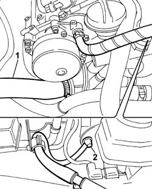
Applies to: engines: 2.4 JTD 20V; all production periods
1. Release the retainers (1a) and disconnect the gearbox flexible cables (1b) from the gearbox and bracket.
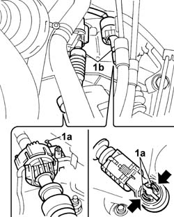
Applies to: engines: 2.4 JTD 20V; all production periods
1. Disconnect the supply pipe to the pressure pump from the fuel filter.
2. Disconnect the supply pipe to the fuel return manifold from the fuel filter.
3. Disconnect the electrical connections for the diesel heater resistances.
 | Description | Connector |
|---|---|---|
3 | Diesel pre-heating resistance | O020A |
| Description | Connector |
|---|---|---|
3 | Diesel pre-heating resistance | O020B |
- Disconnect the electrical connection for the water presence sensor.
| Description | Connector |
|---|---|---|
. | Water in diesel filter sensor | K031 |
4. Disconnect the two heater coolant supply and return pipes.
5. Disconnect the front engine coupling.
| Description | Connector |
|---|---|---|
5 | Front/engine coupling | D004 |
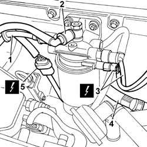
Applies to: engines: 2.4 JTD 20V; all production periods
1. Remove the safety seal on the electrical connector, then disconnect the brake system control unit electrical connector (NFR).
| Description | Connector |
|---|---|---|
1 | Braking system control unit (NFR) | M051 |
2. Undo the nuts securing the brake system control unit (NFR) to the bracket.
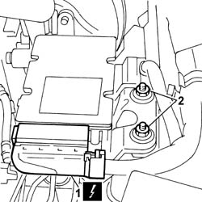
Applies to: engines: 2.4 JTD 20V; all production periods
- Position a hydraulic lift under the gearbox to support the power unit.
1. Undo the nuts securing the engine mounting block to the bracket.
- Gently lower the hydraulic lift until the gearbox bell housing is resting on the crossmember.
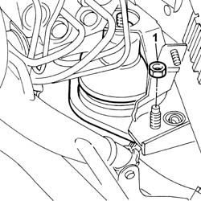
Applies to: engines: 2.4 JTD 20V; all production periods
- Raise the vehicle
- Position a suitable container for collecting the power assisted steering fluid
1. Open the retaining band (1a) and disconnect the flexible return pipe (1b) to the power assisted steering fluid reservoir, then leave the system to drain.
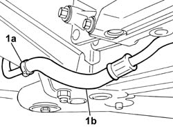
Applies to: engines: 2.4 JTD 20V; all production periods
See in Op. 5050B32 Front windscreen WIPER ARM/S - R.R.
See in Op. 7055A18 Winsdcreen base TRIM - R.R.
1. Disconnect the breather pipe (1a) from the reservoir cap (1b).
2. Undo the bolt (2a) fixing the power assisted steering fluid reservoir (2c) retaining band (2b).
3. Open the reservoir pipe (3b) retaining bands (3a), then disconnect the actual pipes, releasing them from the engine compartment bulkhead.
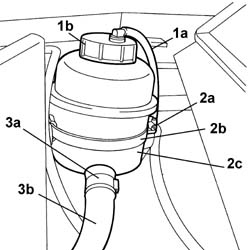
Applies to: engines: 2.4 JTD 20V; all production periods
See in Op. 1088E10 Radiator cooling FAN - R.R.
See in Op. 0010T84 AIR CONDITIONING system COOLANT - Dry and repressurize
1. Tighten the bolt (1a) fixing the compressor pipes connector (1b).
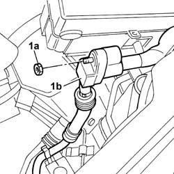
Applies to: engines: 2.4 JTD 20V; all production periods
1. Disconnect the section (1b) of the air conditioning pipe on the engine support frame from the springs (1a).
2. Unscrew bolts (2a) and disconnect oil delivery and return pipes (2b) to the engine oil cooling radiator.
- Remove the engine oil radiator with hoses from the left front wheel side.
3. Disconect the air pipe from the turbocharger.
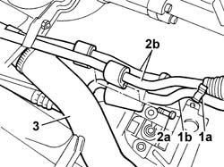
Applies to: engines: 2.4 JTD 20V; all production periods
- Position a suitable container for collecting the power assisted steering fluid
1. Open the bands (1a) retaining the power assisted steering pipes (1b) to the heat exchanger (1c) and disconnect them.
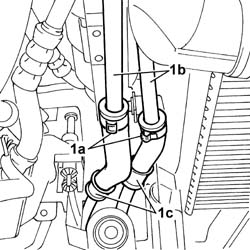
Applies to: engines: 2.4 JTD 20V; all production periods
1. Undo the two fixing nuts (1a) and remove the air filter casing mounting bracket (1b)
2. Unscrew the nut and release the power steering fuel pipes from the chassis.
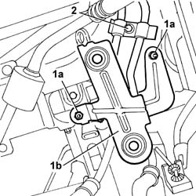
Applies to: engines: 2.4 JTD 20V; all production periods
1. Undo the fixing nut (1a) and disconnect the gearbox earth lead (1b).
2. Lift up the fastening clip (2a) and disconnect the clutch release oil pipe (2b).
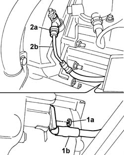
Applies to: engines: 2.4 JTD 20V; all production periods
- Working on the gearbox side, release the left suspension as described below:
1. Remove the staking from the nut fixing the gearbox side wheel hub and undo it.
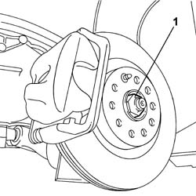
Applies to: engines: 2.4 JTD 20V; all production periods
1. Undo the nut (1a) fixing the steering box track rod end (1b) and disconnect it using the extractor (1c).
 | Description | Code | Function |
|---|---|---|---|
1c | Head extractor | 1.847.035.000 | Extracting steering rod pin from stub axle |
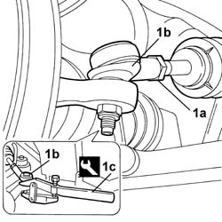
Applies to: engines: 2.4 JTD 20V; all production periods
1. Undo the bolt (1a) fixing the vibration sensor bracket (1b) and move it aside.
2. Undo the nut (2a) fixing the anti-roll bar connecting rod (2b).
3. Undo the upper bolt (3a) fixing the selector fork (3b) to the shock absorber (3c) and the lower bolt (3d) fixing it to the front suspension arm (3e), then remove the selector fork.
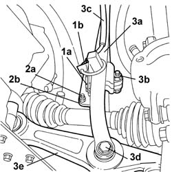
Applies to: engines: 2.4 JTD 20V; all production periods
1. Undo the four fastenings (1a) securing the front track control arm (1b) to the frame.
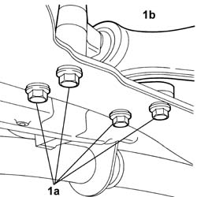
Applies to: engines: 2.4 JTD 20V; all production periods
1. Undo the fastening (1a) securing the lower rear track control arm (1b) to the frame.
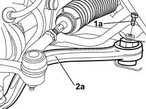
Applies to: engines: 2.4 JTD 20V; all production periods
1. Release the front suspension arm (1a) and the rear suspension arm (1b) from the frame, keeping the thrust washers.
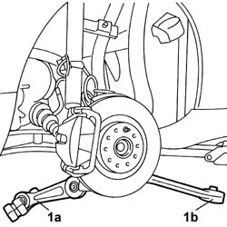
Applies to: engines: 2.4 JTD 20V; all production periods
1. Release the wheel hub (1a) from the left driveshaft (1b) leaving the latter secured to the gearbox.
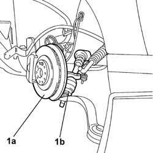
Applies to: engines: 2.4 JTD 20V; all production periods
- Proceed in the same way on the engine side to release the right suspension.
1. Disconnect the electrical connection (1a) for the headlamp alignment adjustment sensor (1b).
| Description | Connector |
|---|---|---|
1a | Headlamp alignment corrector front potentiometer (CAF) | K001 |
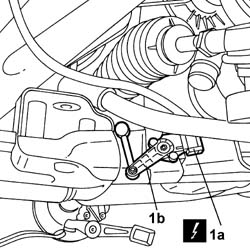
Applies to: engines: 2.4 JTD 20V; all production periods
1. Unscrew nuts (1a) securing bracket (1b) supporting the front exhaust pipe section.
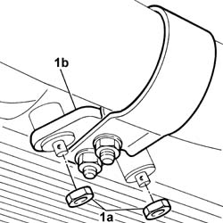
Applies to: engines: 2.4 JTD 20V; all production periods
1. Unscrew the bolts securing the front exhaust pipe section to the catalytic preconverter.
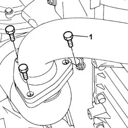
Applies to: engines: 2.4 JTD 20V; all production periods
1. Remove both exhaust pipe front section flexible blocks from the fastening pins.
2. Undo the catalytic converter bolts.
3. Remove the front section of the exhaust pipe.
- Recover the front exhaust pipe section seals.
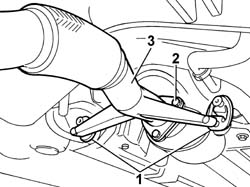
Applies to: engines: 2.4 JTD 20V; all production periods
- Secure the engine coolant radiator with air-air heat exchanger to the body.
1. With the vehicle raised, unscrew the bumper bolts.
2. Unscrew nuts (2a) and remove lower engine radiator support brackets (2b).
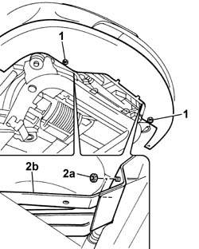
Applies to: engines: 2.4 JTD 20V; all production periods
1. Position the tool for supporting the power unit-chassis assembly (1a), complete with hydraulic jack, under the housings in the engine support frame (1b).
| Description | Code | Function |
|---|---|---|---|
1a | Power unit support frame | 1.870.835.000 | Removing-refitting power unit |
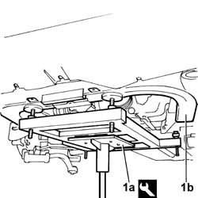
Applies to: engines: 2.4 JTD 20V; all production periods
1. Undo the two rear bolts (1a) and the front bolt (1b) fixing each of the two rear chassis reinforcement brackets (1c).
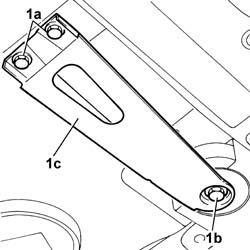
Applies to: engines: 2.4 JTD 20V; all production periods
1. Undo the nut (1a) fixing the timing side engine support (1b).
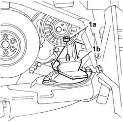
Applies to: engines: 2.4 JTD 20V; all production periods
1. Undo the nut (1a) fixing the rear rear engine support (1b).
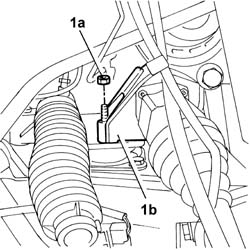
Applies to: engines: 2.4 JTD 20V; all production periods
- Lower the jack and withdraw the power unti with half-axle and chassis.
Applies to: engines: 2.4 JTD 20V; all production periods
Refitting
Removing- Making sure that there are no obstacles and no interference, raise the jack and centre the power unit in the engine compartment without fully raising it.
1. Tighten the nut (1a) fixing the engine support (1b) to the flexible mounting on the chassis to torque.
 | Value - daNm | Fastening | Component | Ø |
|---|---|---|---|---|
1a | 4,5 | Nut | POWER UNIT REAR RIGID MOUNT | M10 X 1.25 |
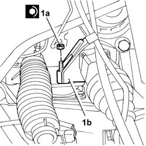
Applies to: engines: 2.4 JTD 20V; all production periods
1. Tighten the nut (1a) fixing the timing side engine support (1b) to the recommended torque.
| Value - daNm | Fastening | Component | Ø |
|---|---|---|---|---|
1a | (Engine support) 4.5 | Nut | RIGID ENGINE MOUNT, TIMING SIDE | M10 X 1.25 |
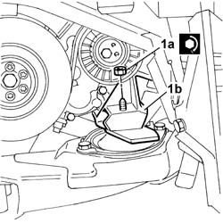
Applies to: engines: 2.4 JTD 20V; all production periods
1. Tighten the two rear bolts (1a) and the front bolt (1b) fixing each of the two rear engine mounting brackets (1c).
| Value - daNm | Fastening | Component | Ø |
|---|---|---|---|---|
1a | 5 | Bolt | FRONT SUSPENSION SUBFRAME | M10 X 1.25 |
| Value - daNm | Fastening | Component | Ø |
|---|---|---|---|---|
1b | 13 | Bolt | FRONT SUSPENSION SUBFRAME | M12 X 1.25 |
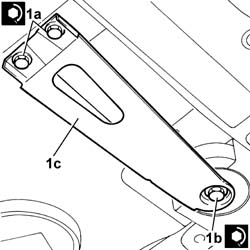
Applies to: engines: 2.4 JTD 20V; all production periods
- Remove the tool supporting the power unit - chassis assembly
- With the vehicle raised, position the radiator mounting brackets and tighten the nuts fastening it to the engine frame
| Value - daNm | Fastening | Component | Ø |
|---|---|---|---|---|
. | 0.5 | Nut | COOLANT RADIATOR SUPPORT BEAM | M6 |
1. Join the front exhaust pipe section flange to the catalytic preconverter flange by tightening the bolts.
- During this operation, it is good practice to fit a new gasket between the two flanges.
2. Tighten the fixing bolts to torque.
| Value - daNm | Fastening | Component | Ø |
|---|---|---|---|---|
2 | (Preconverter) 2.8 | Bolts | EXHAUST PIPE TO ENGINE | M8 |
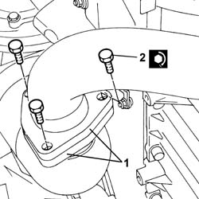
Applies to: engines: 2.4 JTD 20V; all production periods
- Tighten the nuts securing the bracket for the first section of the exhaust pipe to the oil sump to torque.
1. Secure both exhaust pipe front section flexible blocks to the fastening pins.
2. Tighten the fixing bolts to the catalytic converter to torque.
| Value - daNm | Fastening | Component | Ø |
|---|---|---|---|---|
2 | (catalytic converter) 2.8 | Bolts | EXHAUST PIPE TO ENGINE | M8 |
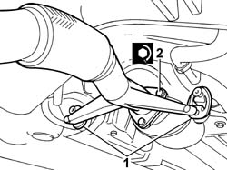
Applies to: engines: 2.4 JTD 20V; all production periods
- Connect the electrical connection for the headlamp alignment adjustment sensor.
| Description | Connector |
|---|---|---|
. | Headlamp alignment corrector front potentiometer (CAF) | K001 |
- Fit the wheel hub on the left driveshaft.
- Positioning the thrust washers, fit the front and rear suspension arms in the housings in the frame.
1. Tighten the bolt (1a) fixing the lower rear track control arm (1b) to the frame to the recommended torque.
| Value - daNm | Fastening | Component | Ø |
|---|---|---|---|---|
2 | 10 | Bolt | LOWER REAR TRACK CONTROL ARMS | M12 X 1.25 |
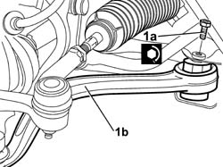
Applies to: engines: 2.4 JTD 20V; all production periods
1. Tighten the bolts (1a) fixing the lower front track control arm (1b) to the frame to the recommended torque.
| Value - daNm | Fastening | Component | Ø |
|---|---|---|---|---|
1a | 7.4 | Bolt | LOWER FRONT TRACK CONTROL ARMS | M10 X 1.25 |
| Value - daNm | Fastening | Component | Ø |
|---|---|---|---|---|
. | 9 | Bolt | LOWER FRONT TRACK CONTROL ARMS | M12 X 1.25 |
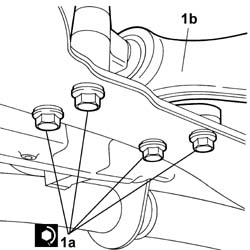
Applies to: engines: 2.4 JTD 20V; all production periods
- Position the fork, then tighten the upper bolt fixing the fork to the shock absorber and the lower bolt fixing it to the front suspension arm to the recommended torque.
| Value - daNm | Fastening | Component | Ø |
|---|---|---|---|---|
. | 11.6 | Bolt | FRONT DAMPER FORK ON WISHBONE | M12 X 1.25 |
- Secure the anti-roll bar connecting rod and tighten the fixing nut.
| Value - daNm | Fastening | Component | Ø |
|---|---|---|---|---|
. | 5,5 | Nut | FRONT ANTI-ROLL BAR | M10 X 1.25 |
- Position the vibration sensor bracket and tighten the fixing bolt.
| Value - daNm | Fastening | Component | Ø |
|---|---|---|---|---|
. | 0.4 | Bolt | JOLTING SENSOR | M5 |
- Connect the steering track rod end to the steering knuckle and tighten the fixing nut to torque.
| Value - daNm | Fastening | Component | Ø |
|---|---|---|---|---|
. | 4.5 | Nut | ADJUSTABLE LINK BALL JOINTS | M10 x 1.25 |
- Tighten the nut securing the driveshaft to the wheel hub to the recommended torque using the angular tightening tool (1b), then stake the nut.
| Value - daNm | Fastening | Component | Ø |
|---|---|---|---|---|
. | 7 | Nut | FRONT HUBS COMPLETE WITH BEARING | M24 |
| Description | Code | Function |
|---|---|---|---|
. | Torque wrench | 1.820.622.000 | Angular tightening of driveshaft nut to wheel hub |
- Proceed in the same way for the engine side suspension.
- Lower the vehicle.
- Connect the clutch release oil pump, checking the spring is properly inserted.
- Connect the gearbox earth lead to the bodyshell by tightening the nut.
- Position the air filter casing mounting bracket, then tighten the two fixing nuts to the recommended torque.
| Value - daNm | Fastening | Component | Ø |
|---|---|---|---|---|
. | 0.5 | Nut | AIR CLEANER CASE MOUNT | M6 |
- Position the power steering pipes on the chassis and tighen the nut.
- Connect the power assisted steering pipes to the heat exchanger, then close the retaining bands.
- Fit the engine oil cooling radiator and connect the delivery and return hoses to the rigid sections and tighten the bolts.
- Connect the air pipe to the turbocharger.
- Secure the engine air conditioning system pipe to the chassis with the clips.
1. Tighten the front section air condtioner pipe to the rear section.
| Value - daNm | Fastening | Component | Ø |
|---|---|---|---|---|
1a | 3.5 | Nut | COMPRESSOR PIPE CONNECTORS | M10X1.25 |
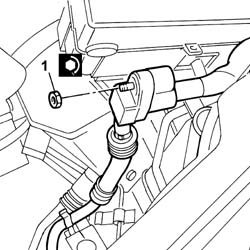
Applies to: engines: 2.4 JTD 20V; all production periods
See in Op. 1088E10 Radiator cooling FAN - R.R.
- Connect the power assisted steering pipes to the reservoir, then tighten the band retaining the reservoir to the bodyshell.
See in Op. 7055A18 Winsdcreen base TRIM - R.R.
See in Op. 5050B32 Front windscreen WIPER ARM/S - R.R.
- Connect the power assisted steering pipes to the heat exchanger, then close the retaining bands.
1. Raise the jack positioned under the gearbox casing and tighten the two nuts fixing the gearbox side engine support to the bracket to the recommended torque.
| Value - daNm | Fastening | Component | Ø |
|---|---|---|---|---|
1 | (Mount) 5.8 | Nuts | GEARBOX SIDE RUBBER MOUNT | M10X1.25 |
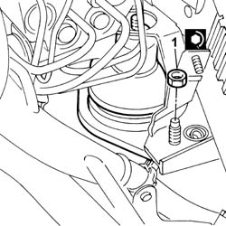
Applies to: engines: 2.4 JTD 20V; all production periods
- Tighten the nuts securing the brake system control unit (NFR) to the bracket.
| Value - daNm | Fastening | Component | Ø |
|---|---|---|---|---|
. | 1.5 | Nuts | HYDRAULIC AND ELECTRONIC CONTROL UNIT | M8 |
- Connect the electrical connection for the brake system electronic control unit (NFR).
| Description | Connector |
|---|---|---|
. | Braking system control unit (NFR) | M051 |
- Connect the two heater coolant supply and return pipes.
- Connect the electrical connections for the diesel heater coils.
| Description | Connector |
|---|---|---|
. | Diesel pre-heating resistance | O020A |
| Description | Connector |
|---|---|---|
. | Diesel pre-heating resistance | O020B |
- Disconnect the electrical connection for the water presence sensor.
| Description | Connector |
|---|---|---|
. | Water in diesel filter sensor | K031 |
- Connect the supply pipe to the pressure pump to the fuel filter.
- Connect the supply pipe to the fuel return manifold to the fuel filter.
- Position the gear control hoses and secure the retaining devices to the bracket on the gearbox.
- Press-fit both cable heads.
- Connect the single-acting valve to the brake servo.
- Connect the upper coolant pipe to the thermstat.
See in Op. 1060G80 Diesel electronic injection system CONTROL UNIT - R.R.
See in Op. 1048A10 COMPLETE AIR FILTER -R.R.
See in Op. 1048A21 AIR INLET HOSE FROM INTAKE TO FILTER - R.R.
See in Op. 1048A50 air inlet pipe to turbocharger - r + r
See in Op. 1048A56 UPPER RESONATOR - R.R.
See in Op. 1048B44 RIGID air supply PIPE from heat exchanger to intake manifold - R.R.
See in Op. 1008C10 Power unit REACTION ROD - Replace
See in Op. 1088B10 Engine coolant SUPPLY RESERVOIR - R.R.
- Raise the vehicle.
- Connect the lower pipe with the rapid connector for the engine coolant radiator.
See in Op. 7055B42 FRONT WHEEL ARCH LINER (one), left or right - R.R.
- Left and right sides
See in Op. 7055B64 Engine compartment DUST SEAL in front wheel arch (one), left or right - R.R.
- Left and right sides
See in Op. 7055B54 PROTECTION/GUARD under engine - R.R.
- Lower the vehicle
See in Op. 4450B02 Left FRONT WHEEL (one) - R.R.
See in Op. 4450B04 Right FRONT WHEEL (one) - R.R.
- Connect the negative battery lead, then close the boot.
- Tighten the bolt fixing the steering column to the steering box to the recommended torque.
| Value - daNm | Fastening | Component | Ø |
|---|---|---|---|---|
- | 2 | Bolt | STEERING SHAFT MOUNTING | M8 |
See in Op. 0010T70 POWER ASSISTED STEERING FLUID - Replace
See in Op. 0010T20 Engine REFRIGERANT FLUID - Change
- Remove the vehicle from the lift.
Topics linked from this page (22)
- 0010T20 Engine REFRIGERANT FLUID - Change
- 0010T70 POWER ASSISTED STEERING FLUID - Replace
- 0010T84 AIR CONDITIONING system COOLANT - Dry and repressurize
- 1008C10 Power unit REACTION ROD - Replace
- 1016A10 SOUND-PROOFING COVER - R.R.
- 1048A10 COMPLETE AIR FILTER -R.R.
- 1048A21 AIR INLET HOSE FROM INTAKE TO FILTER - R.R.
- 1048A50 air inlet pipe to turbocharger - r + r
- 1048A56 UPPER RESONATOR - R.R.
- 1048B44 RIGID air supply PIPE from heat exchanger to intake manifold - R.R.
- 1060G80 Diesel electronic injection system CONTROL UNIT - R.R.
- 1088B10 Engine coolant SUPPLY RESERVOIR - R.R.
- 1088E10 Radiator cooling FAN - R.R.
- 4450A10 FRONT WHEEL GEOMETRY - Check using optical equipment - Includes front wheel toe-in adjustment if necessary
- 4450B02 Left FRONT WHEEL (one) - R.R.
- 4450B04 Right FRONT WHEEL (one) - R.R.
- 5050B32 Front windscreen WIPER ARM/S - R.R.
- 7040D50 ENGINE COMPARTMENT UPPER SOUND INSULATION SHIELD - R.R.
- 7055A18 Winsdcreen base TRIM - R.R.
- 7055B42 FRONT WHEEL ARCH LINER (one), left or right - R.R.
- 7055B54 PROTECTION/GUARD under engine - R.R.
- 7055B64 Engine compartment DUST SEAL in front wheel arch (one), left or right - R.R.